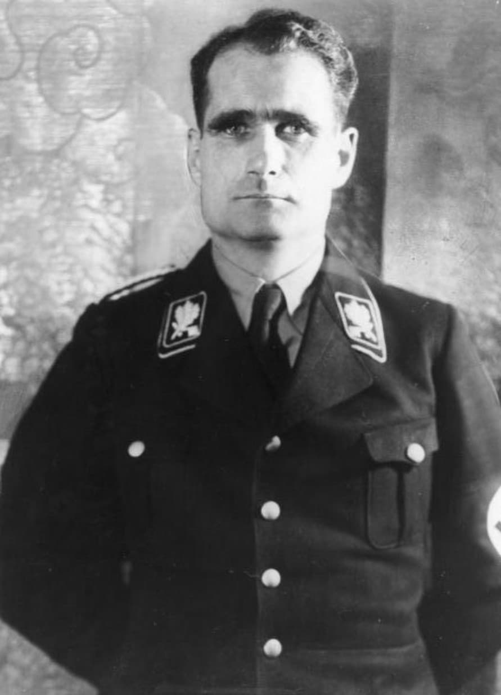
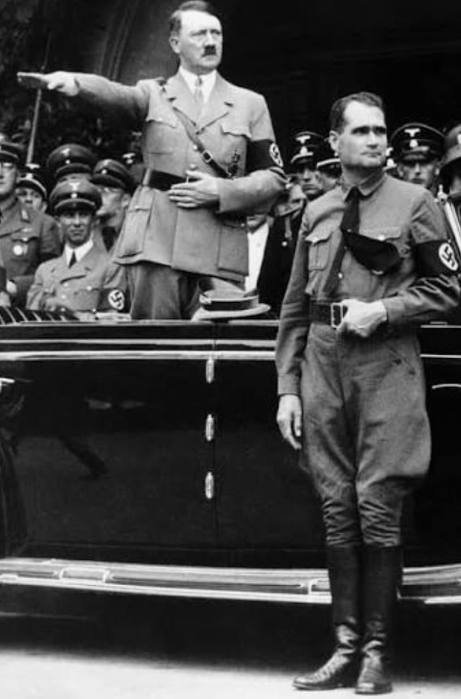
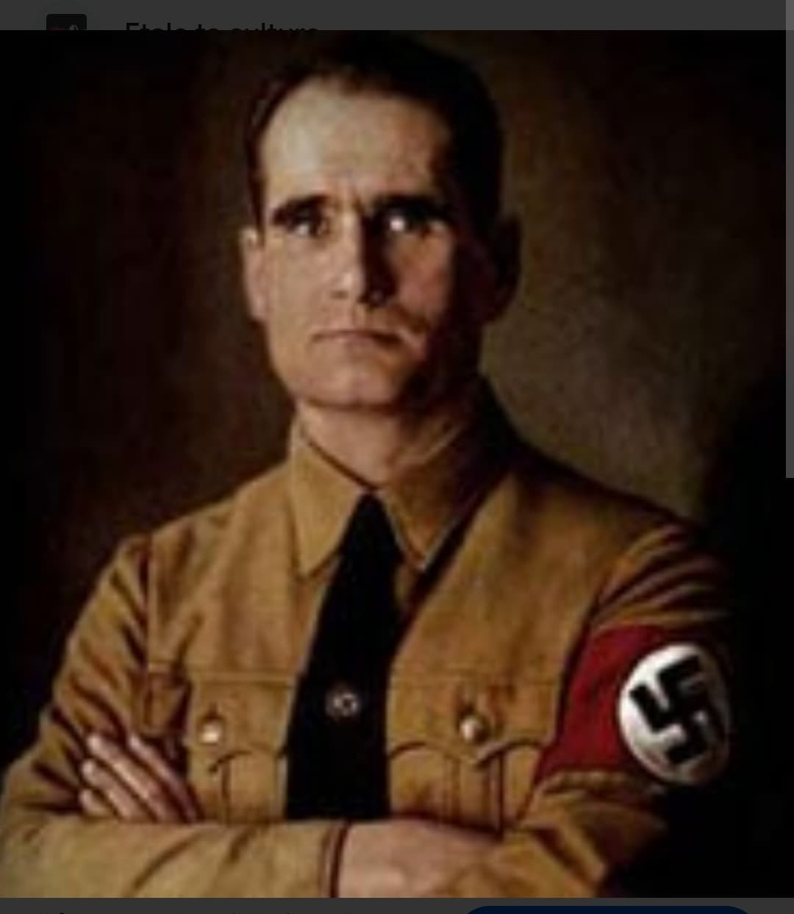
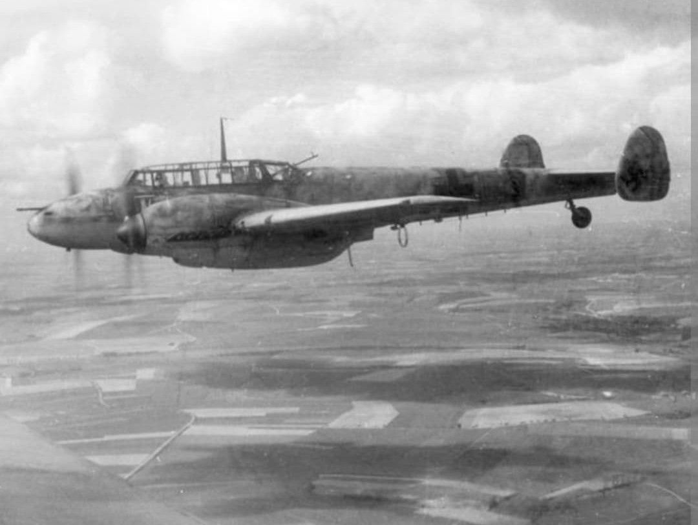
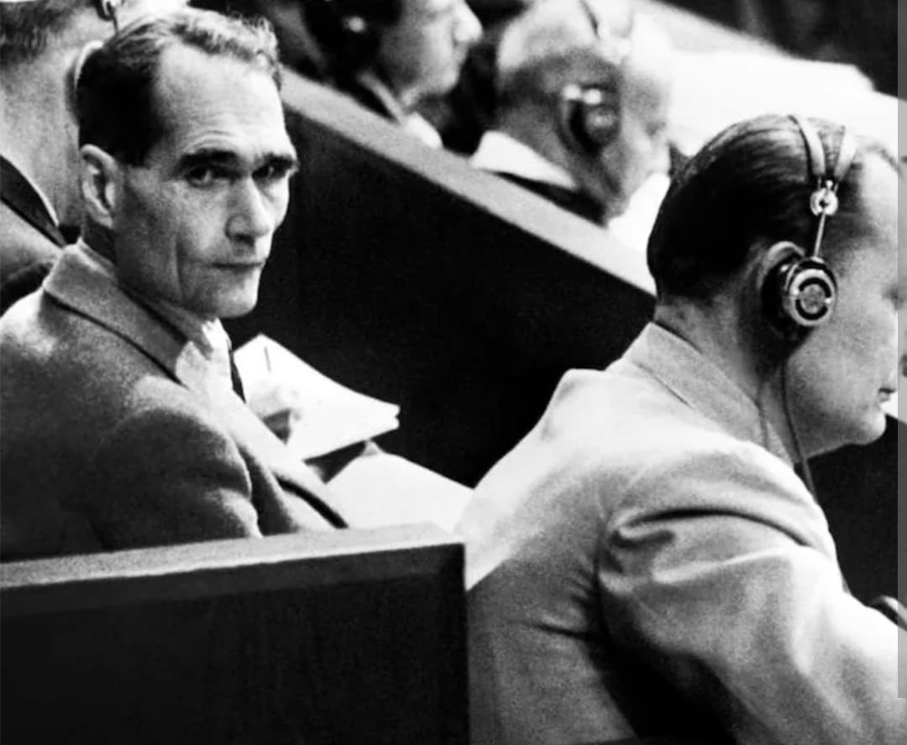
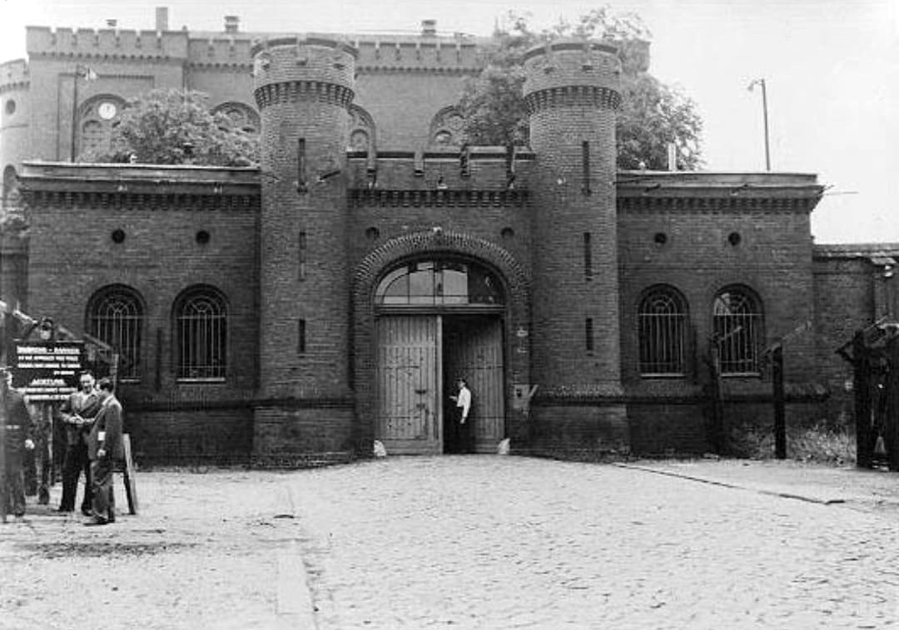

RUDOLF
HESS
Histoire & Mémoire
Introduction

Rudolf Hess (1894–1987) est l’une des figures les plus énigmatiques du régime nazi.
Fidèle d’Hitler, idéologue discipliné, compagnon de la première heure, il occupe une place centrale
dans la hiérarchie du parti. Pourtant, son geste du 10 mai 1941 — un vol solitaire vers l’Écosse pour
négocier une paix — reste l’un des actes les plus incompréhensibles de la Seconde Guerre mondiale.
Son parcours le mène de l’ascension du NSDAP à l’isolement total, jusqu’à devenir le
dernier prisonnier de Spandau, seul dans une prison entière pendant plus de vingt ans.
Aux côtés d’Hitler : l’ascension

Hess rejoint le parti nazi dès les années 1920. Il participe au putsch de Munich en 1923 et est emprisonné
avec Hitler. Durant cette période, il devient son secrétaire personnel et l’un de ses plus fidèles collaborateurs.
Il aide à rédiger Mein Kampf et, après 1933, il est nommé Adjoint du Führer.
Il supervise l’organisation du parti, la discipline idéologique et la structure interne du NSDAP.
Un homme isolé dans la hiérarchie nazie

Malgré son rang élevé, Hess est progressivement marginalisé par les autres dignitaires nazis : Himmler, Göring,
Goebbels, Bormann. Son caractère introverti, son idéalisme et son absence de sens politique le coupent des luttes
internes du régime.
Il développe une obsession : convaincre le Royaume‑Uni de conclure une paix séparée avec l’Allemagne.
Cette idée fixe devient centrale dans son esprit, au point de l’amener à un acte irrationnel.
Le vol insensé vers l’Écosse (10 mai 1941)

Le 10 mai 1941, Hess prend seul les commandes d’un Messerschmitt Bf 110 et traverse la mer du Nord.
Sans escorte, sans ordre, convaincu d’être investi d’une “mission historique”, il saute en parachute
au-dessus de l’Écosse pour tenter de rencontrer le duc de Hamilton et négocier une paix.
Les historiens décrivent ce vol comme un acte irrationnel, mystique, presque suicidaire.
Hitler, furieux, le renie publiquement et le déclare “mentalement dérangé”.
Détention en Angleterre (1941–1945)

Capturé par des civils écossais, Hess est interné au Royaume‑Uni pendant toute la guerre.
Il passe par plusieurs lieux de détention — Buchanan, Maudsley, Mytchett — où les Britanniques le jugent
incohérent, obsédé par la paix et parfois délirant.
Il reste prisonnier en Angleterre jusqu’en 1945, avant d’être transféré à Nuremberg pour être jugé
avec les principaux dirigeants nazis.
Procès de Nuremberg (1945–1946)

À Nuremberg, Hess adopte une attitude étrange : silence, amnésie sélective, déclarations incohérentes.
Il est finalement condamné à la prison à vie pour complot et crimes contre la paix.
Spandau : une prison pour un seul homme (1947–1987)

Après sa condamnation, Hess est transféré à la prison de Spandau, administrée par les quatre puissances alliées.
Au fil des années, les autres prisonniers sont libérés. À partir de 1966, Hess devient le
seul détenu de toute la prison.
Spandau continue pourtant de fonctionner comme un établissement complet :
gardes, officiers, cuisiniers, médecins, personnel administratif.
En moyenne, 40 à 60 gardes sont mobilisés en permanence pour surveiller un seul homme,
un ratio unique dans l’histoire contemporaine.
Hess vit dans un isolement extrême pendant plus de vingt ans.
Il jardine, lit, écrit, marche dans la cour.
Sa mort en 1987 met fin à l’existence de la prison, immédiatement détruite pour éviter qu’elle ne devienne un lieu de pèlerinage.